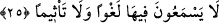

Bu cümle, mefulün leh’tir. Yâni, bütün bu nimetler, onların dünyadaki yapmış
oldukları sâlih amellerine karşılık olarak verilir. İyiliğin karşılığı iyilikten başka ne
olabilir ki?!.. Âhirette kazanılan mevki ve dereceler amellerin miktarına göre taksim
edilmiştir. Cennete girebilme ise ancak Allah’ın rahmet ve ihsânı iledir, kişinin ameli
ile değildir. Bu nedenle, cennete girerek oradaki lezzetli etten yemeği, cennetin güzel
şarabından içmeyi ve hurîlerden faydalanmayı isteyen kimse dünyada açlığı tokluğa,
susuzluğu suya kanmaya ve vuslat arzusunu dünya zevklerine tercih etmelidir.
Rivayet edildiğine göre, cennetteki hûri yürüdüğünde inciklerindeki çıngırakların
Allah’ı takdis, bileklerindeki bileziklerin Allah’ı yüceltme sesleri işitilir. Yakuttan
gerdanı gerdanlığında parıldarken, iki ayağındaki altın nallarının inciden olan kemerleri
devamlı tesbihi seslendirirler. Cennet kadınlarından her birinin, aynı renkte olmayan,
herbiri ayrı ayrı renklerde yetmiş elbisesi, değişik renkte yetmiş çeşit kokusu vardır.
Her bir cennet kadınının incilerle örülmüş kırmızı yakuttan yetmişer tahtları vardır. Her
tahtın üzerinde yastık örtüleri atlastan olan yetmişer döşek vardır. Bu yetmiş yatak
üzerinde yetmiş koltuk olup herbir kadının hizmetinde yetmiş hizmetçi kız vardır. Her
birinin elinde iki tane altın tabak, bunların içinde de her lokması ayrı tatta çeşitli
yemekler ikram edilecekdir. Üzerinde kırmızı yakutla süslü iki altın bilezik bulunan
eşine de aynı şekilde kırmızı yakuttan taht üzerinde ikramlar verilecektir.
Yahya b. Muaz (rh.a) şöyle derdi: Ölümün elinden almayacağı bir eşe hitab et. Hiçbir
şeyin tahrib edemiyeceği evde onu gelin edip zifaf et. Ona felaket ateşlerinin
yakamayacağı çeşitli kumaşlar ve tahtlarla döşenip süslenmiş bir gelin evi yap.
Keşfü’l-esrâr’da yer alan bir rivayete göre, o cennet kadınları zâferandan
yaratılmışlardır.
25. Orada boş bir söz ve günaha sokan bir laf işitmezler.
“Orada boş bir söz” yâni bâtıl, bozuk laf “işitmezler.” Kamus’ta “lağv”in bir değeri
olmayan düşük söz ve benzeri şeyler olduğu söylenmiştir. Müfredat’da da “lağv”in hiç
itibar edilmeyen, bir ihtiyaç veya bir düşünce eseri olamayan, serçe ve benzeri kuşların
bozuk sesleri cümlesinden olan şeyler olduğu belirtilmiştir.
“Ve günaha sokan bir laf işitmezler.” Bunlar, günaha nisbet edilmez. Yâni, onlara bu
yüzden “günah işlediniz” denmez. Bu açıklamalardan orada boş, bozuk söz, günah
işletecek şey ve günah olan şeyi dinlemek gibi şeylerin olmadığı anlaşılmaktadır.__WORD__ (ism) kelimesinin anlamı sevap işlemekten oyalayıp alıkoyan fiiller demektir.
Çoğulu __WORD__ (âsâm)dır.